PROJETO NÓS · v0.15.1 · 2026-10-13
MVP 03 — ciclo real de Hábito
Antes real extraído de 48fdd3d. Depois: ciclo principal ordenado, legado e revisão como alternativas, histórico paginado e funções futuras explícitas. Capturas do Atlas ampliam somente altura/scroll nesta sessão para mostrar o desenho inteiro; não constituem comparação de pixels.
Aplicativo autenticado local, fixtures temporárias e dados sem pessoas reais. Prazos antecipados somente no banco local. Não comprova prática longitudinal, SMTP ou operação online. As capturas mostram confirmação ativa e encerramento com história preservada. A paginação de 23 revisões empatadas é comprovada nos testes, sem fabricação de votos no Atlas.
MVP vivo · Contrato/manual · Registro
Atlas Tela 24 · antes · desktop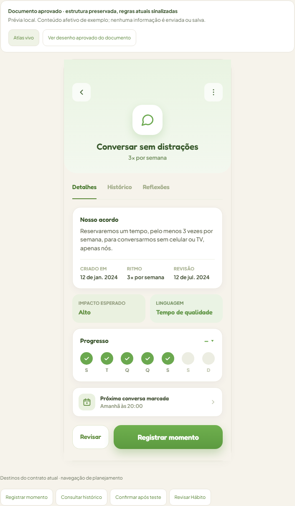
Atlas Tela 24 · depois · desktop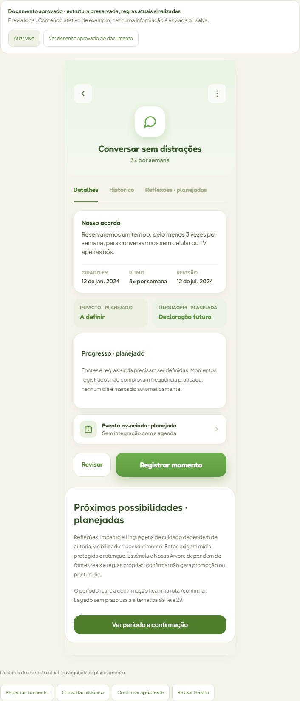
Atlas Tela 28 · antes · desktop Atlas Tela 28 · depois · desktop
Atlas Tela 28 · depois · desktop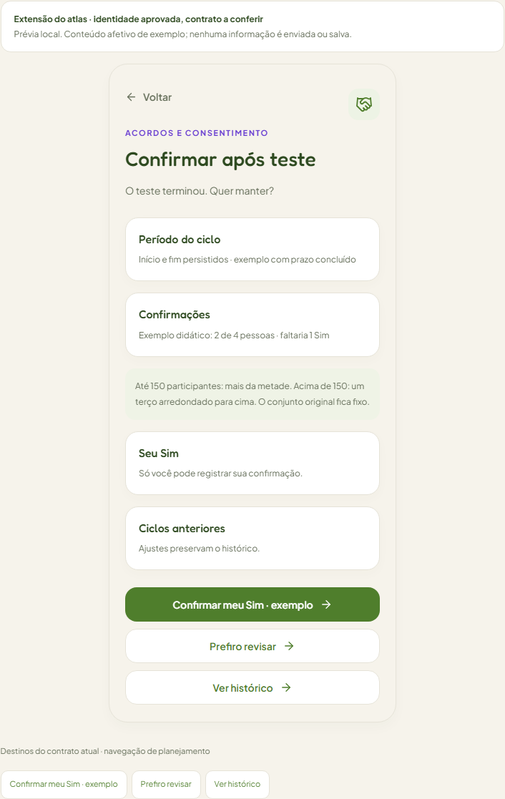
Atlas Tela 33 · antes · desktop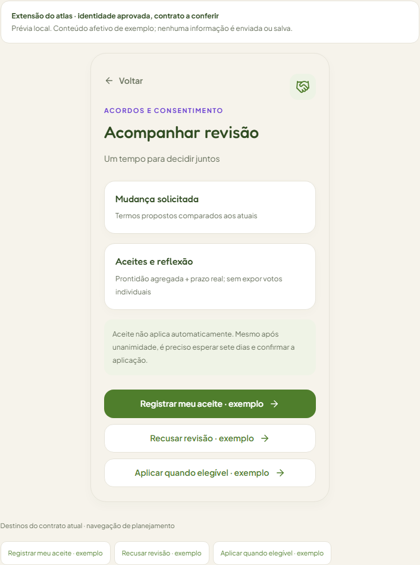
Atlas Tela 33 · depois · desktop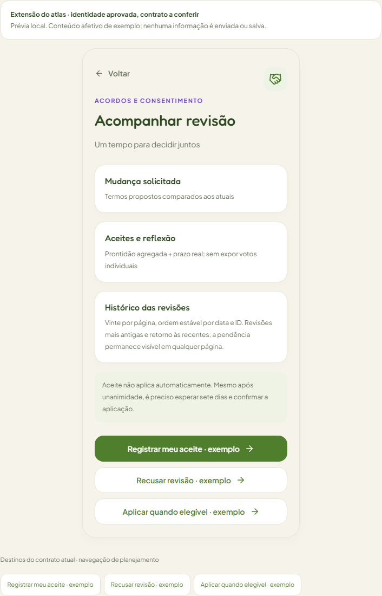
MVP 03 · antes · desktop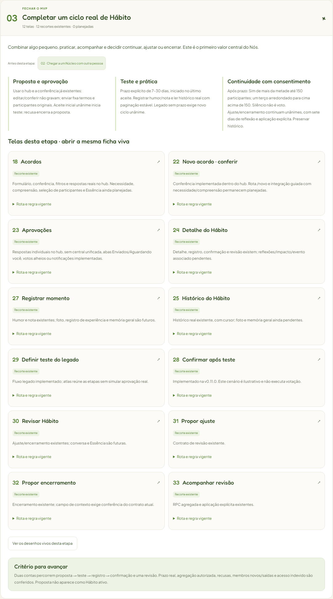
MVP 03 · depois · desktop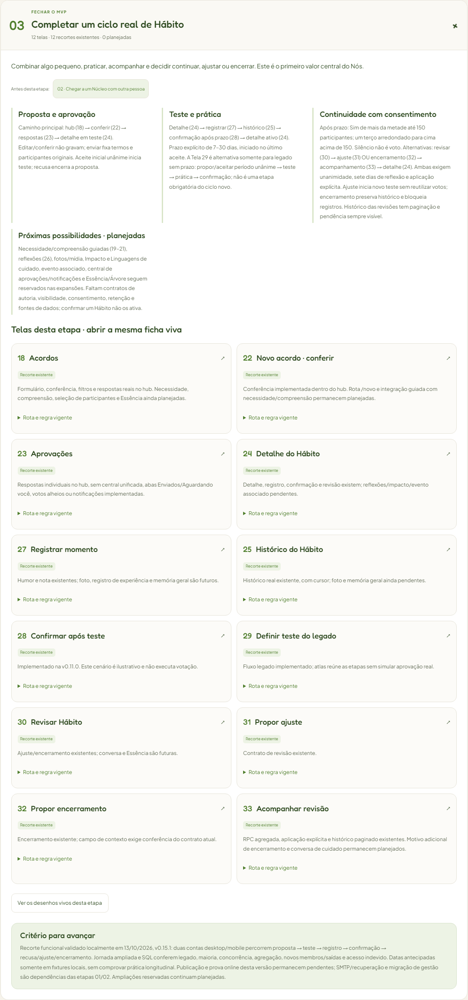
Aplicativo local · detalhe · desktop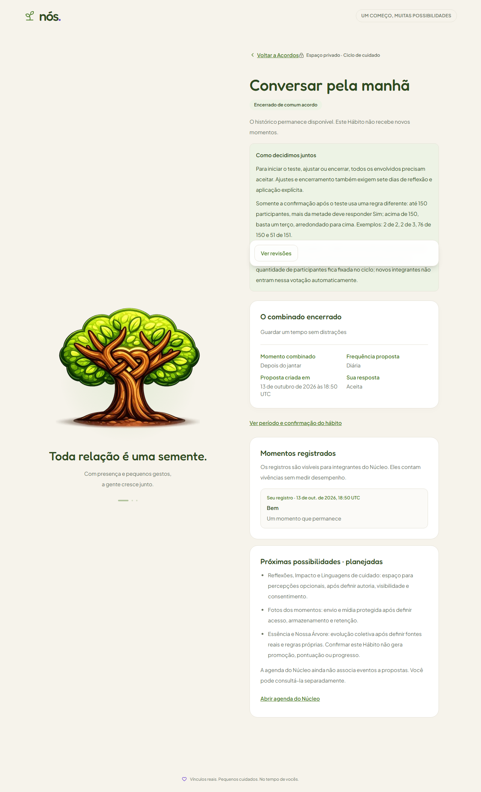
Aplicativo local · confirmacao · desktop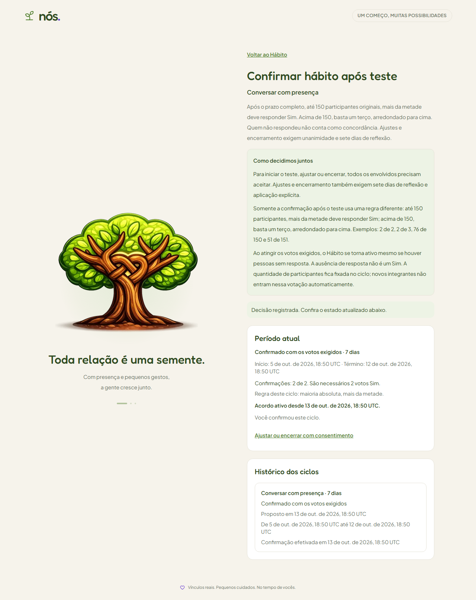
Aplicativo local · revisao · desktop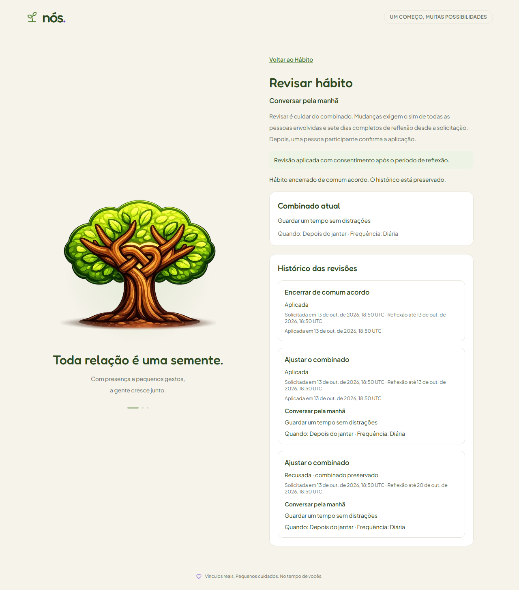
Atlas Tela 24 · antes · mobile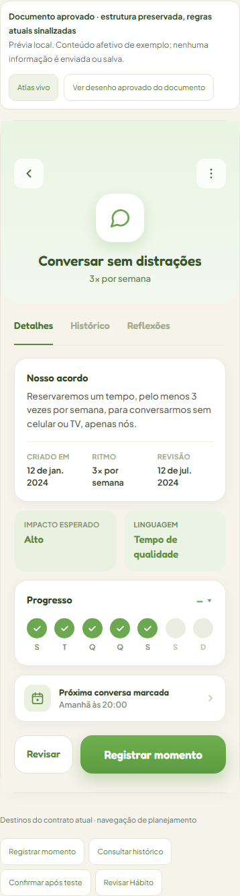
Atlas Tela 24 · depois · mobile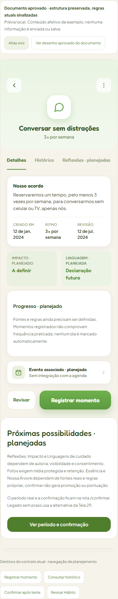
Atlas Tela 28 · antes · mobile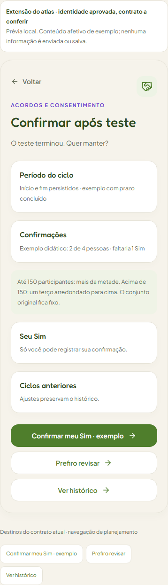
Atlas Tela 28 · depois · mobile Atlas Tela 33 · antes · mobile
Atlas Tela 33 · antes · mobile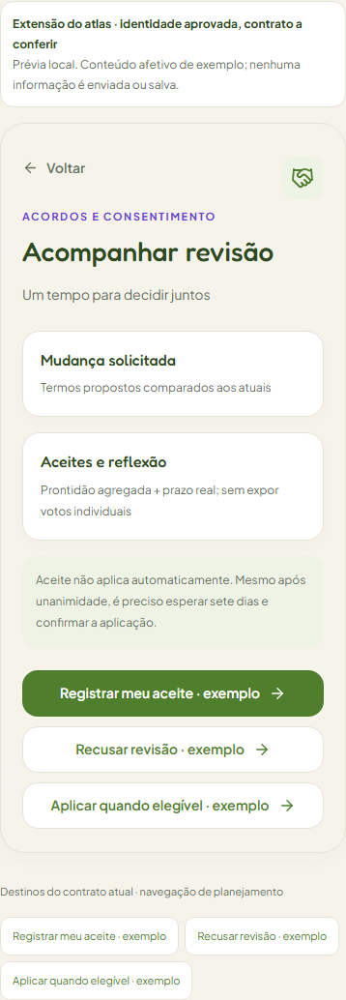
Atlas Tela 33 · depois · mobile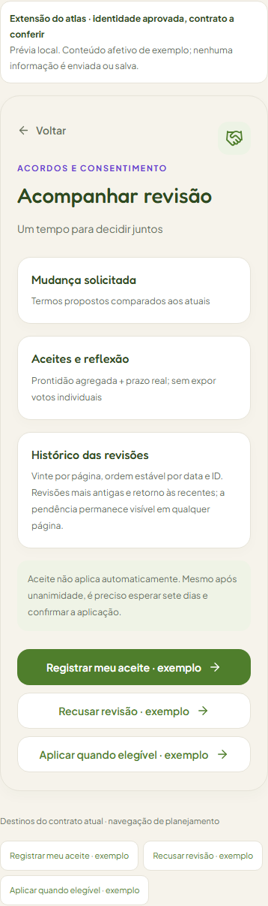
MVP 03 · antes · mobile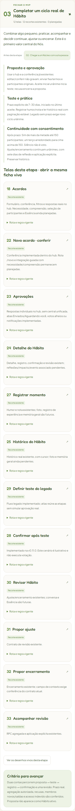
MVP 03 · depois · mobile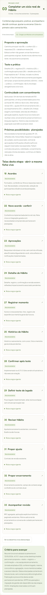
Aplicativo local · detalhe · mobile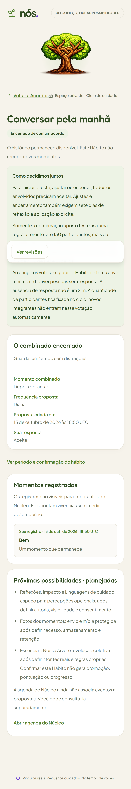
Aplicativo local · confirmacao · mobile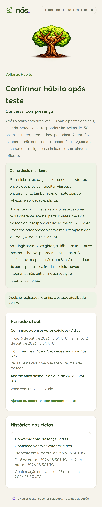
Aplicativo local · revisao · mobile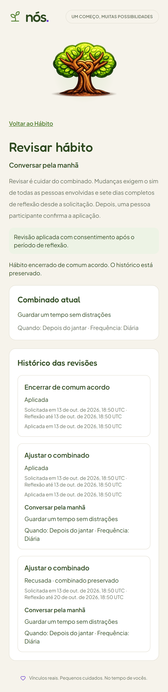
Reflexões/Impacto/Linguagens, fotos, evento associado, Essência/Árvore, guiado e central de aprovações continuam planejados.